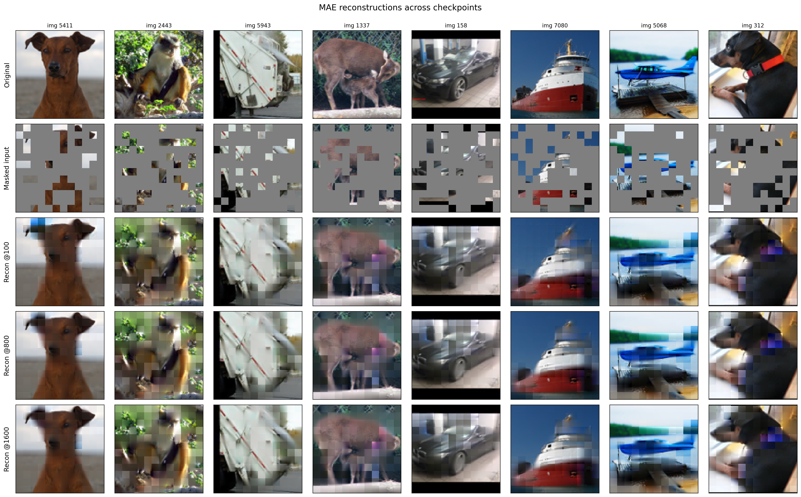
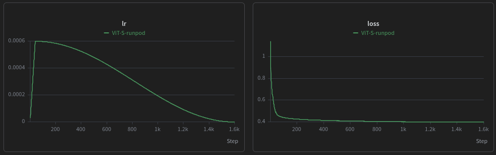

Original, masked input, and image reconstructions of STL-10 test images.
Approach
Model. ViT-S encoder and an 8-layer decoder, trained with
the MAE recipe (75% of patches masked, 25% visible).
Data. STL-10: 100k unlabeled images for pretraining,
5k labeled for fine-tuning, and 8k for test.
Implementation. From scratch in raw PyTorch (w/o Lightning).
Training. 1600 epochs on one RTX 5090 via RunPod. First implementation was DDP with 2x Tesla T4s.
Evaluation. Linear probe, MLP probe, and fine-tuning the
last transformer block plus a linear head, following the paper’s ablation.

MAE architecture: 75% random masking, ViT-S/8 encoder on visible patches,
mask-token insertion, decoder, and MSE against normalized target patches.
Generative Reconstructions
Reconstructions can be seen below at various training epochs.
Reconstruction quality largely plateaus after the first few hundred
training epochs, likely due to several factors including the limited
size of the training set (100k vs. the MAE paper’s 1.28M ImageNet-1K
images) and the limited capacity of the encoder, ViT-S. I did not elect
to test a larger encoder because of the relatively small size of the
training set. As seen in the next section, representation quality
continued to improve even if reconstruction quality plateaued, which was
also observed in the paper.
The significant color differences in some patches (like the blue patches on the dog's ear or the pink patches on the deer) are the result of using per-patch normalized pixels as the reconstruction target. This removes each patch's absolute mean and scale during training and, during visualization, reapplies these ground truth statistics to the predicted patch. This process emphasizes local structure/texture, but errors in the normalized precition sometimes appear as conspicuous reconstruction artifacts.

Original image, masked input and reconstructed images at Epochs 100, 800 and 1600.

Learning rate (warmup then cosine decay) and reconstruction loss over 1600 epochs.
Downstream evaluation
I tested with frozen-encoder probes in 3 scenarios: linear probe, MLP head
(linear → GELU → linear), and linear probe
plus last transformer block fine-tuned. In all cases the decoder was
dropped and switched out for the probes. The test set consisted of
8k images across 10 classes. The results show that
downstream accuracy continues to increase with more training epochs but
at diminishing returns. Higher epoch counts are most beneficial for the
linear probe and only make a small difference for fine-tuning the last
block.
Method
Epoch 100
Epoch 400
Epoch 800
Epoch 1600
Linear probe
70.74%
82.16%
85.09%
86.21%
MLP probe
73.25%
83.06%
86.54%
87.45%
Last-block FT
78.05%
87.14%
89.64%
90.14%
Linear
86.2%
MLP
87.5%
Last-block
90.1%
Test accuracy at epoch 1600.
Learnings
Seeing MAE try to learn every fine-grained texture in an image motivates me
to pursue JEPA-style SSL approaches that more directly focus on the semantic
representations of an image. Qualitatively, even at epoch 100,
MAE has already learned much of the structure of the STL-10images, but spends the
remaining 1500 epochs on the laborious task of local pixel-level detail.
Pay close attention to how a paper defines its learning rate.
MAE reports a “base learning rate,” then applies a scaling rule to get
the actual learning rate used during training. In my first implementation,
I used the reported base LR directly with the paper’s batch size of 4096,
which meant my effective learning rate was erroneously actually about 16× smaller than theirs.
During fine-tuning the performance increased significantly when I remembered
to turn off the masking and provide all of the patches to the classification head.